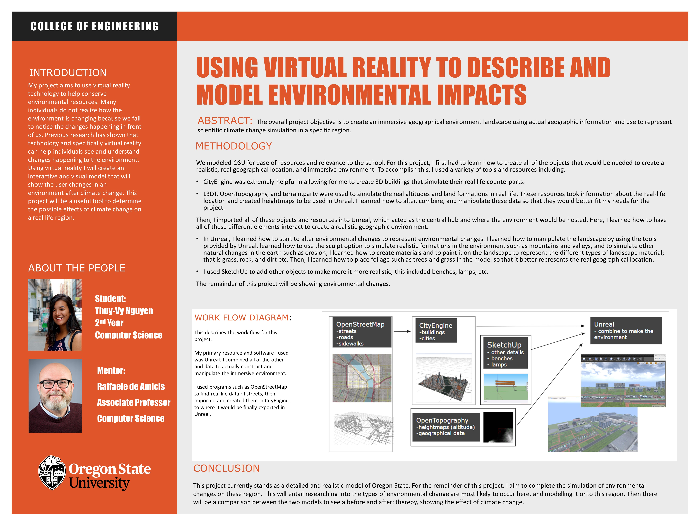

Projects
Using Virtual Reality to Model and Describe Environmental Impacts
I was a 2018-2019 URSA Enagage scholarship recipient at Oregon State. This allowed me to recieve funding for completing a research project under mentoship of an OSU faculty member. Dr. Raffaele De Amicis, helped me construct and implement my project. Here is the poster that I presented at the Celebrating Undergraduate Excellence showcase in May 2019 about my project.
